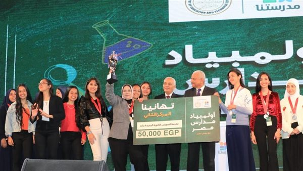

وزير التربية والتعليم يعلن إطلاق مسابقة "أولمبياد مدارس مصر" في مختلف محافظات الجمهورية

أعلن الدكتور رضا حجازي وزير التربية والتعليم والتعليم الفني انطلاق مسابقة «أولمبياد مدارس مصر» في كافة محافظات الجمهورية خلال الفترة المقبلة، وذلك عقب تدشين فعاليات المسابقة بمحافظة السويس تحت شعار «مع بعض نكبر».
جاء ذلك خلال فعاليات نهائي مسابقة «أولمبياد مدارس مصر» بمحافظة السويس بحضور اللواء عبدالمجيد صقر محافظ السويس والدكتور أحمد ضاهر نائب الوزير للتطوير التكنولوجى، والدكتورة شيرين حمدى مستشار الوزير للتطوير الإدارى والمشرف على الإدارة المركزية لشئون مكتب الوزير، والدكتورة إيمان حسن رئيس الإدارة المركزية للأنشطة الطلابية.
وتأتي هذه المسابقة ضمن مبادرات وزارة التربية والتعليم، لإحياء النشاط الطلابي، واكتشاف المواهب في المدارس.
وقال الدكتور رضا حجازي، في كلمته خلال الاحتفالية، إن المدرسة عادت إلى دورها الطبيعي، مشيرا إلى أن المدرسة ليست مجرد اجتياز اختبار ولا يجب اختزال التعليم في هذه الفكرة، فالاختبار التحصيلي هو مجرد وسيلة ولا يجب أبدًا أن يتحول إلى غاية.
وأعرب الوزير عن سعادته بتطبيق يوم الأنشطة الرياضية والثقافية والفنية الذي أطلقته وزارة التربية والتعليم والتعليم الفني والذي أثبت دور المدرسة في إعداد الطالب للحياة، واستفادة الطلاب من هذه التجرية، مشيدًا بأداء الفرق المشاركة في المسابقة سواء في طريقة التفكير، وطريقة تحديد المشكلة من خلال إجرائهم لاستبيانات ومقابلات، مؤكدًا أن الطلاب ينطلقون ويبدعون من خلال مثل هذه الفرص.
وأشار الوزير إلى أهمية إلقاء الضوء على النماذج التعليمية المتميزة مثل مدارس المتفوقين في العلوم والتكنولوجيا (STEM)، ومدارس التكنولوجيا التطبيقية.
وقال الوزير: «إن النجاح الذي تحقق يؤكد أن القراءة الحرة وتحصيل الثقافة العامة تعطي مساحة للطالب وفرصة أكثر للتعلم؛ لذلك كان من بين آليات التقييم للمسابقات المعرفية تحقيق القدر الأكبر في القراءة».
وأضاف الدكتور رضا حجازي: «إن القراءة لها دور كبير في تحقيق النضج الفكري لدى الطلاب، مشيرًا إلى أن رؤية مصر ٢٠٣٠ تتحقق بوجود طالب يعتز بذاته فخور ببلاده قابل للتعددية قادر على التنافسية».
وأكد الوزير أن ممارسة الطالب لنشاط واحد من الممكن أن يحقق له نواتج التعلم، موضحا أن التجارب التي جرت خلال فعاليات المسابقة أثبتت نجاحا مبهرا.
وفي ختام كلمته، وجه الوزير الشكر لمحافظ السويس، مؤكدًا أنه من محافظة السويس الباسلة ستنطلق المبادرة إلى جميع محافظات مصر، مؤكدًا أن جميع المبادرات التي تم عرضها في الفعالية ستتبناها وزارة التربية والتعليم والتعليم الفني.